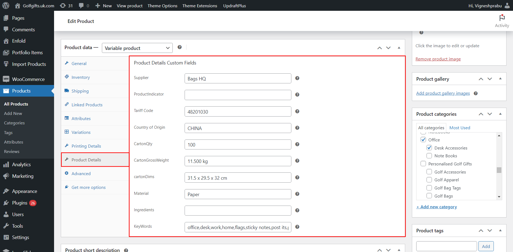
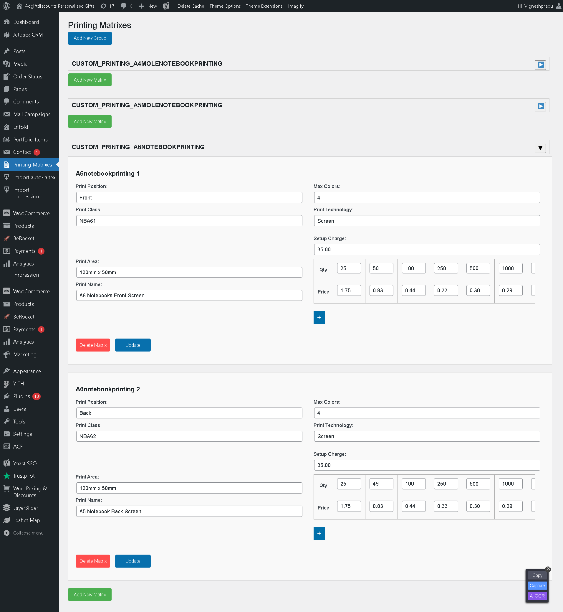

Import Products with Printing Options Woocommerce Plugin Documentation by “ ShareSoft Technology ” v1.0
Using REST APIs Import Products With Printing Options Woocommerce Plugin
Created: 28-10-2023
Last Update: 28-10-2023
By: ShareSoft Technology
Email: ShareSoft Technology
Information about updates and new features in Plugin are announced on our Social Networks - Twitter and Facebook. Follow us on Twitter to stay tuned on updates and Connect with us on Facebook for more detailed updates
Hello! We would like to thank you for purchasing our plugin! :)
This file will explain you how to set up and use the “Import products With Printing Options” WordPress plugin.
This file looks extensive so you might think that, the plugin is hard to use, but actually it's not! You probably might jump to the options page and explore everything yourself. This file is more of a reference help, if you do not know what to do, or if you are not familiar with WordPress.
Have fun with your new plugin!
Best regards,
ShareSoft Technology
Table of Contents
Overview - top
Enhance the "Import Products with Printing Options" plugin for WooCommerce Import products using various RESTful APIs with the following comprehensive features:Customizable Import Settings:
Allow users to specify import criteria such as data fields, pricing adjustments, and category mappings to tailor the import process to their needs.
Advanced Logging and Error Handling:Implement detailed logging of import activities and errors for comprehensive monitoring and troubleshooting.
API-Driven Category Mapping:Utilize RESTful APIs to automatically map imported product categories to corresponding website categories, ensuring accurate catalog organization.
Scheduled Imports with Cron:Enable automated imports at scheduled intervals using cron jobs for full product updates and real-time price/stock adjustments.
Discounts and Pricing Tables:Utilize API pricing data to apply quantity-based discounts and display pricing tables for products, enhancing flexibility in pricing strategies.
Focused Printing Management:Exclude API products from custom printing groups when assigning products for printing, ensuring a focused and tailored approach to printing management.
These enhancements collectively optimize product management, streamline import processes, and elevate user experience within a concise and effective framework, covering customizable settings, advanced logging, category mapping, scheduled updates, user permissions, API integration, discount handling, and specialized printing management.
How the plugin functions - top
3.1 Admin features-top
- After activating the Import Products with Printing Options plugin, next you have to manage Custom admin menu settings.
- Click Import Products Menu
Image below, explains how the tabs are used.
Image below , On the Import Products WooCommerce dashboard, you'll see a list of available options fields to Import.
- 1. shows when Price increase (%) is set 0 it shows the default price - increase on (% value) increses the price value too. [ie) value is 5 then price value increses from 5% in addition to normal price]
- 2. shows the total number of product that the batch need to have. [ ie) If 10 is set then product import by 10 in a batch ]
- 3. If you need Include variation image too then click on check box or else no need to check on it .
- 4. Then click on import , To indicate the importing process there appears a progress bar .
Image below ,includes a feature that allows users to stop an ongoing import process and reset it. Additionally, the plugin stores the retrieved data in a JSON file inside the uploads/auto-laltex-products folder.

when a certain number of given batch import is completed then there appears an info message of successful completion
Updated Features : Allow users to specify import criteria such as Import Product Categories fields, pricing fields, and category fields to tailor the import process to their needs.
Image below, Created Product details custom tabs and retrive api product details custom fields.
Image below, to display retrived api Printing details created custom tab and store the printing details.
Below Image, Advanced Options: Users can preview the logo in multiple positions (up to a specific number, as defined by the plugin). They can switch between positions to compare how the logo looks in each Printing Positions.
Below Image, The Category Mapping feature streamlines product categorization by allowing users to easily associate multiple API categories with corresponding website categories. This flexible and efficient mapping process ensures accurate alignment, simplifying the management of diverse product catalogs. Users can effortlessly synchronize and organize their products, enhancing the overall user experience.
Below Image, When creating a custom printing group and assigning products, the printing details are generated excluding API products, ensuring a focused and tailored approach to printing management.
Below Image, Select the Printing Matrix Group to Assign the Printing Details For the Product.
Below Image, Products are imported through cron jobs, with created imported logs meticulously listed for easy reference and monitoring, streamlining the import process for enhanced efficiency and organization.
3.2 Output view - top
Image below shows that, Display the imported products with relevant details such as product name, description, images, and other specifications.
Provide a user-friendly interface that showcases the products neatly for easy browsing
Below image shows,
- Price Ranges Table: Implement a dynamic price ranges table based on user quantity selection. Allow users to input the desired quantity and dynamically calculate the price based on the selected quantity. Display this information in a clear and easy-to-understand table format.
- The "Buy Decorated" Button: Plugin offers a custom process for adding products to the cart. This process is specifically designed to accommodate products with printing options, allowing users to customize and purchase them seamlessly.
Below image shows that display popup product and printing details cusotmization options.
Below images shows that,
- 1. Logo Upload and Zoom:
- 2. Multiple Print Positions:
- 3. Print Position Customization:
- 4. Print Technology and Color Selection:
- 5. Preview and Confirmation:
Users can upload logos, which can be zoomed in for detailed inspection.
Users can choose from various print positions on the product (e.g., front, back, sleeve).
Customization options for each print position include logo placement, size, and orientation adjustments.
Users can select print technologies (e.g., screen printing, embroidery) and logo colors. Pricing is calculated based on the chosen print technology, number of colors, and other factors.
Users can preview their customizations, including logo placement, print positions, and colors. Confirmation option to add the customized product items to the cart.
After click here to add to cart button Add the selected items to be cart.
Cart Page View
Below images shows that, selected items display grouped on cart page also displayed customization printing details,
Below images shows that, Added calculated Printing and setup cost amount.,
Order Page View
Below images shows that, View Orders to display grouped items and Display listed their product customization Printing details
Once again, thank you so much for purchasing this plugin. As we said at the beginning, We would be glad to help you, if you have any questions related to this plugin.
ShareSoft Technology